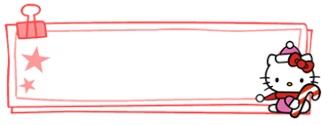

Automation
Upload File
Upload your .csv file
Download Sample Template File
File Type
Choose the file type to save as
PNG
JPG
SVG
PDF
Download Folder
Name of the folder files will download to
PNG Transparent
Make PNG transparent
GO!